1. SpringCloud介绍 1.1 SpringCloud简介 Spring Boot擅长的是集成，把世界上最好的框架集成到自己项目中
Spring Cloud本身也是基于SpringBoot开发而来，SpringCloud是一系列框架的有序集合,也是把非常流行的微服务的技术整合到一起，是属于微服务架构的一站式技术解决方案。
Spring Cloud包含了：
注册中心：Eureka、consul、Zookeeper
负载均衡：Ribbon
熔断器：Hystrix
服务通信：Feign
网关：Gateway
配置中心 ：config
消息总线：Bus
集群状态等等….功能。
Spring Cloud协调分布式环境中各个微服务，为各类服务提供支持。
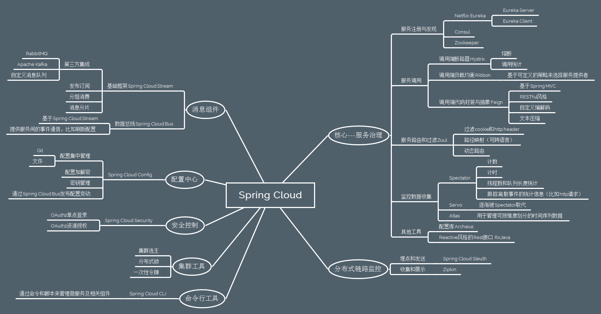
(2)Spring Cloud的版本
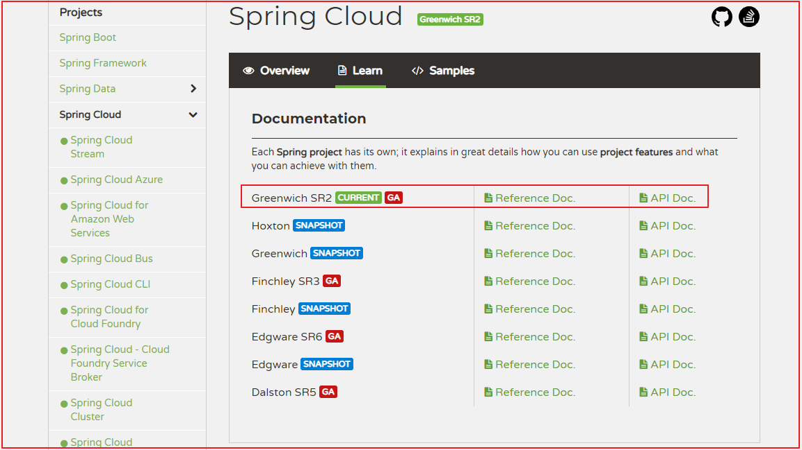
版本说明：
1 2 3 4 5 6 SpringCloud是一系列框架组合，为了避免与框架版本产生混淆，采用新的版本命名方式，形式为大版本名+子版本名称 大版本名用伦敦地铁站名 子版本名称三种 SNAPSHOT：快照版本，尝鲜版，随时可能修改 M版本，MileStone，M1表示第一个里程碑版本，一般同时标注PRE，表示预览版 SR，Service Release，SR1表示第一个正式版本，同时标注GA(Generally Available)，稳定版
1.2 SpringCloud与SpringBoot版本匹配关系
SpringBoot
SpringCloud
1.2.x
Angel版本
1.3.x
Brixton版本
1.4.x
Camden版本
1.5.x
Dalston版本、Edgware
2.0.x
Finchley版本
2.1.x
Greenwich GA版本 (2019年2月发布)
鉴于SpringBoot与SpringCloud关系，SpringBoot建议采用2.1.x版本
1.34Spring cloud 和dubbo有什么区别？ dubbo —>
spring cloud (RestTemplate–>httpclient)
2. 服务调用方式 2.1 RPC和HTTP 常见远程调用方式：
RPC:(Remote Produce Call)远程过程调用
1 2 3 4 1.基于Socket 2.自定义数据格式 3.速度快，效率高 4.典型应用代表：Dubbo，WebService，ElasticSearch集群间互相调用
HTTP：网络传输协议
1 2 3 4 1.基于TCP/IP 2.规定数据传输格式 3.缺点是消息封装比较臃肿、传输速度比较慢 4.优点是对服务提供和调用方式没有任何技术限定，自由灵活，更符合微服务理念
RPC和HTTP的区别：RPC是根据语言API来定义，而不是根据基于网络的应用来定义。
Http客户端工具
常见Http客户端工具：HttpClient、OKHttp、URLConnection。
2.2 Spring的RestTemplate (1)RestTemplate介绍
RestTemplate是Rest的HTTP客户端模板工具类
对基于Http的客户端进行封装
实现对象与JSON的序列化与反序列化
不限定客户端类型，目前常用的3种客户端都支持：HttpClient、OKHttp、JDK原生URLConnection(默认方式)
(1)搭建springcloud-day1-provider
这里不演示详细过程了，大家直接使用IDEA搭建一个普通的SpringBoot工程即可。
坐标
1 2 3 <groupId > com.yuefeng</groupId > <artifactId > springcloud-day1-provider</artifactId > <version > 0.0.1-SNAPSHOT</version >
pom.xml依赖
1 2 3 4 5 6 7 8 9 10 11 12 13 14 15 <parent > <groupId > org.springframework.boot</groupId > <artifactId > spring-boot-starter-parent</artifactId > <version > 2.1.6.RELEASE</version > <relativePath /> </parent > <dependencies > <dependency > <groupId > org.springframework.boot</groupId > <artifactId > spring-boot-starter-web</artifactId > </dependency > </dependencies >
创建com.yuefeng.domain.User
1 2 3 4 5 6 7 8 9 10 11 12 13 14 15 16 17 public class User implements Serializable private String name; private String address; private Integer age; public User () } public User (String name, String address, Integer age) this .name = name; this .address = address; this .age = age; } }
application.properties
创建com.yuefeng.controller.UserController,代码如下：
1 2 3 4 5 6 7 8 9 10 11 12 13 14 15 16 17 @RestController @RequestMapping(value = "/user") public class UserController @RequestMapping(value = "/list") public List<User> list () List<User> users = new ArrayList<User>(); users.add(new User("王五" , "深圳" , 25 )); users.add(new User("李四" , "北京" , 23 )); users.add(new User("赵六" , "上海" , 26 )); return users; } }
创建启动类，并启动工程
1 2 3 4 5 6 @SpringBootApplication public class SpringcloudDay1ProviderApplication public static void main (String[] args) SpringApplication.run(SpringcloudDay1ProviderApplication.class, args); } }
访问：<http://localhost:18081/user/list>效果如下：
(2)创建springcloud-day1-resttemplate
创建的详细过程也不讲解了，直接使用IDEA创建一个SpringBoot工程即可。
pom.xml依赖
1 2 3 4 5 6 7 8 9 10 11 12 13 14 15 16 17 18 19 20 21 22 <parent > <groupId > org.springframework.boot</groupId > <artifactId > spring-boot-starter-parent</artifactId > <version > 2.1.6.RELEASE</version > <relativePath /> </parent > <dependencies > <dependency > <groupId > org.springframework.boot</groupId > <artifactId > spring-boot-starter-web</artifactId > </dependency > <dependency > <groupId > org.springframework.boot</groupId > <artifactId > spring-boot-starter-test</artifactId > <scope > test</scope > </dependency > </dependencies >
创建启动类，并在启动类中创建RestTemplate对象
1 2 3 4 5 6 7 8 9 10 11 12 13 14 15 16 17 @SpringBootApplication public class SpringcloudDay1ResttemplateApplication public static void main (String[] args) SpringApplication.run(SpringcloudDay1ResttemplateApplication.class, args); } @Bean public RestTemplate restTemplate () return new RestTemplate(); } }
测试
在测试类HttpDemoApplicationTests中@Autowired注入RestTemplate
通过RestTemplate的getForObject()方法，传递url地址及实体类的字节码
RestTemplate会自动发起请求，接收响应
并且帮我们对响应结果进行反序列化
代码如下：
1 2 3 4 5 6 7 8 9 10 11 12 13 14 15 16 @RunWith(SpringRunner.class) @SpringBootTest public class SpringcloudDay1ResttemplateApplicationTests @Autowired private RestTemplate restTemplate; @Test public void testRestTemplateQuery () String url = "http://localhost:18081/user/list" ; String result = restTemplate.getForObject(url, String.class); System.out.println(result); } }
3.Spring Cloud Eureka 3.1Eureka 简介 Eureka解决了第一个问题：服务的管理，注册和发现、状态监管、动态路由。
Eureka负责管理记录服务提供者的信息。服务调用者无需自己寻找服务，Eureka自动匹配服务给调用者。
Eureka与服务之间通过心跳机制进行监控；
Eureka：就是服务注册中心(可以是一个集群)，对外暴露自己的地址
服务提供者：启动后向Eureka注册自己的信息(地址，提供什么服务)
服务消费者：向Eureka订阅服务，Eureka会将对应服务的所有提供者地址列表发送给消费者，并且定期更新
心跳(续约)：提供者定期通过http方式向Eureka刷新自己的状态
3.2入门案例 (1)springcloud-parent
1 2 3 4 5 6 7 8 9 10 11 12 13 14 15 16 17 18 19 20 21 22 23 24 25 26 27 28 29 30 31 32 33 34 35 36 37 38 39 40 41 <?xml version="1.0" encoding="UTF-8"?> <project xmlns ="http://maven.apache.org/POM/4.0.0" xmlns:xsi ="http://www.w3.org/2001/XMLSchema-instance" xsi:schemaLocation ="http://maven.apache.org/POM/4.0.0 http://maven.apache.org/xsd/maven-4.0.0.xsd" > <modelVersion > 4.0.0</modelVersion > <groupId > com.yuefeng</groupId > <artifactId > springcloud-parent</artifactId > <packaging > pom</packaging > <version > 1.0-SNAPSHOT</version > <modules > <module > eureka-server</module > <module > user-provider</module > <module > user-consumer</module > </modules > <description > 统一管理子工程的版本包括了springboot的版本和springcloud的版本</description > <parent > <groupId > org.springframework.boot</groupId > <artifactId > spring-boot-starter-parent</artifactId > <version > 2.1.4.RELEASE</version > <relativePath /> </parent > <dependencyManagement > <dependencies > <dependency > <groupId > org.springframework.cloud</groupId > <artifactId > spring-cloud-dependencies</artifactId > <version > Greenwich.SR1</version > <type > pom</type > <scope > import</scope > </dependency > </dependencies > </dependencyManagement > </project >
(2)eureka-server 1 2 3 4 5 6 7 8 9 10 11 12 13 14 15 16 17 18 19 20 21 22 23 <?xml version="1.0" encoding="UTF-8"?> <project xmlns ="http://maven.apache.org/POM/4.0.0" xmlns:xsi ="http://www.w3.org/2001/XMLSchema-instance" xsi:schemaLocation ="http://maven.apache.org/POM/4.0.0 http://maven.apache.org/xsd/maven-4.0.0.xsd" > <parent > <artifactId > springcloud-parent</artifactId > <groupId > com.yuefeng</groupId > <version > 1.0-SNAPSHOT</version > </parent > <modelVersion > 4.0.0</modelVersion > <artifactId > eureka-server</artifactId > <dependencies > <dependency > <groupId > org.springframework.cloud</groupId > <artifactId > spring-cloud-starter-netflix-eureka-server</artifactId > </dependency > </dependencies > </project >
1 2 3 4 5 6 7 8 9 10 11 12 13 14 15 16 17 18 package com.yuefeng;import org.springframework.boot.SpringApplication;import org.springframework.boot.autoconfigure.SpringBootApplication;import org.springframework.cloud.netflix.eureka.server.EnableEurekaServer;@SpringBootApplication @EnableEurekaServer public class EurekaServerApplication public static void main (String[] args) SpringApplication.run(EurekaServerApplication.class, args); } }
配置文件
1 2 3 4 5 6 7 8 9 10 11 12 server: port: 7001 spring: application: name: eureka-server eureka: client: register-with-eureka: false fetch-registry: false service-url: defaultZone: http://localhost:7001/eureka
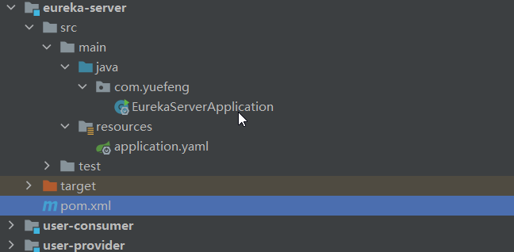
(3)user-provider 1 2 3 4 5 6 7 8 9 10 11 12 13 14 15 16 17 18 19 20 21 22 23 24 25 26 27 28 <?xml version="1.0" encoding="UTF-8"?> <project xmlns ="http://maven.apache.org/POM/4.0.0" xmlns:xsi ="http://www.w3.org/2001/XMLSchema-instance" xsi:schemaLocation ="http://maven.apache.org/POM/4.0.0 http://maven.apache.org/xsd/maven-4.0.0.xsd" > <parent > <artifactId > springcloud-parent</artifactId > <groupId > com.yuefeng</groupId > <version > 1.0-SNAPSHOT</version > </parent > <modelVersion > 4.0.0</modelVersion > <artifactId > user-provider</artifactId > <dependencies > <dependency > <groupId > org.springframework.boot</groupId > <artifactId > spring-boot-starter-web</artifactId > </dependency > <dependency > <groupId > org.springframework.cloud</groupId > <artifactId > spring-cloud-starter-netflix-eureka-client</artifactId > </dependency > </dependencies > </project >
1 2 3 4 5 6 7 8 9 10 11 server: port: 18081 spring: application: name: user-provider eureka: client: service-url: defaultZone: http://localhost:7001/eureka
1 2 3 4 5 6 7 8 9 10 11 12 13 14 15 16 17 18 19 20 21 22 23 24 package com.yuefeng;import org.springframework.boot.SpringApplication;import org.springframework.boot.autoconfigure.SpringBootApplication;import org.springframework.cloud.netflix.eureka.EnableEurekaClient;import org.springframework.context.annotation.Bean;import org.springframework.web.client.RestTemplate;@SpringBootApplication @EnableEurekaClient public class userConsumerApplication public static void main (String[] args) SpringApplication.run(userConsumerApplication.class, args); } @Bean public RestTemplate restTemplate () return new RestTemplate(); } }
========================实体类 =======================
1 2 3 4 5 6 7 8 9 10 11 12 13 14 15 16 17 18 19 20 21 22 23 24 25 26 27 28 29 30 31 32 33 34 35 36 37 38 39 40 41 42 43 package com.yuefeng.pojo;public class User private String username; private String password; public User () } @Override public String toString () return "User{" + "username='" + username + '\'' + ", password='" + password + '\'' + '}' ; } public User (String username, String password) this .username = username; this .password = password; } public String getUsername () return username; } public void setUsername (String username) this .username = username; } public String getPassword () return password; } public void setPassword (String password) this .password = password; } }
========================UserController =======================
1 2 3 4 5 6 7 8 9 10 11 12 13 14 15 16 17 18 19 20 21 22 23 24 25 26 package com.yuefeng.controller;import com.yuefeng.pojo.User;import com.yuefeng.service.UserService;import org.springframework.beans.factory.annotation.Autowired;import org.springframework.web.bind.annotation.GetMapping;import org.springframework.web.bind.annotation.PathVariable;import org.springframework.web.bind.annotation.RequestMapping;import org.springframework.web.bind.annotation.RestController;@RestController @RequestMapping("/user") public class UserController @Autowired private UserService userService; @GetMapping("/{id}") public User findById (@PathVariable(name="id") Integer id) System.out.println("=====================1============被调用" ); return userService.findById(id); } }
========================UserServiceImpl =======================
模拟数据库数据
1 2 3 4 5 6 7 8 9 10 11 12 13 14 15 16 17 18 19 20 21 22 23 24 25 26 package com.yuefeng.service.impl;import com.yuefeng.pojo.User;import com.yuefeng.service.UserService;import org.springframework.stereotype.Service;@Service public class UserServiceImpl implements UserService @Override public User findById (Integer id) User user = new User("3" ,"password" ); if (id==1 ){ user.setUsername("1" ); }else if (id==2 ){ user.setUsername("2" ); } return user; } }
========================UserService =======================
1 2 3 4 5 6 7 8 9 package com.yuefeng.service;import com.yuefeng.pojo.User;public interface UserService User findById (Integer id) ; }
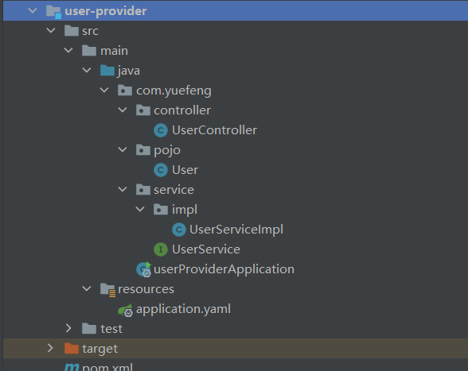
(4)user-consumer 1 2 3 4 5 6 7 8 9 10 11 12 13 14 15 16 17 18 19 20 21 22 23 24 25 26 27 <?xml version="1.0" encoding="UTF-8"?> <project xmlns ="http://maven.apache.org/POM/4.0.0" xmlns:xsi ="http://www.w3.org/2001/XMLSchema-instance" xsi:schemaLocation ="http://maven.apache.org/POM/4.0.0 http://maven.apache.org/xsd/maven-4.0.0.xsd" > <parent > <artifactId > springcloud-parent</artifactId > <groupId > com.yuefeng</groupId > <version > 1.0-SNAPSHOT</version > </parent > <modelVersion > 4.0.0</modelVersion > <artifactId > user-consumer</artifactId > <dependencies > <dependency > <groupId > org.springframework.boot</groupId > <artifactId > spring-boot-starter-web</artifactId > </dependency > <dependency > <groupId > org.springframework.cloud</groupId > <artifactId > spring-cloud-starter-netflix-eureka-client</artifactId > </dependency > </dependencies > </project >
1 2 3 4 5 6 7 8 9 10 server: port: 18082 spring: application: name: user-consumer eureka: client: service-url: defaultZone: http://localhost:7001/eureka registry-fetch-interval-seconds: 30
1 2 3 4 5 6 7 8 9 10 11 12 13 14 15 16 17 18 19 20 21 22 23 24 package com.yuefeng;import org.springframework.boot.SpringApplication;import org.springframework.boot.autoconfigure.SpringBootApplication;import org.springframework.cloud.netflix.eureka.EnableEurekaClient;import org.springframework.context.annotation.Bean;import org.springframework.web.client.RestTemplate;@SpringBootApplication @EnableEurekaClient public class userConsumerApplication public static void main (String[] args) SpringApplication.run(userConsumerApplication.class, args); } @Bean public RestTemplate restTemplate () return new RestTemplate(); } }
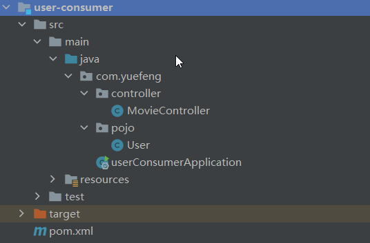
===========================MovieController==========================
1 2 3 4 5 6 7 8 9 10 11 12 13 14 15 16 17 18 19 20 21 22 23 24 25 26 27 28 29 30 31 32 33 34 35 package com.yuefeng.controller;import com.yuefeng.pojo.User;import org.springframework.beans.factory.annotation.Autowired;import org.springframework.cloud.client.ServiceInstance;import org.springframework.cloud.client.discovery.DiscoveryClient;import org.springframework.web.bind.annotation.GetMapping;import org.springframework.web.bind.annotation.RequestMapping;import org.springframework.web.bind.annotation.RestController;import org.springframework.web.client.RestTemplate;import java.util.List;@RestController @RequestMapping("/movie") public class MovieController @Autowired private RestTemplate restTemplate; @Autowired private DiscoveryClient discoveryClient; @GetMapping("/look") public User look () List<ServiceInstance> instances = discoveryClient.getInstances("user-provider" ); ServiceInstance serviceInstance = instances.get(0 ); User user = restTemplate.getForObject("http://" +serviceInstance.getHost()+":" +serviceInstance.getPort()+"/user/2" , User.class); System.out.println(user); return user; } }
3.3Eureka详解 3.3.1 基础架构 Eureka架构中的三个核心角色
1 2 3 4 5 1.服务注册中心：Eureka服务端应用，提供服务注册发现功能，eureka-server 2.服务提供者：提供服务的应用 要求统一对外提供Rest风格服务即可 本例子：user-provider 3.服务消费者：从注册中心获取服务列表，知道去哪调用服务方，user-consumer
3.3.2 Eureka客户端 服务提供者要向EurekaServer注册服务，并完成服务续约等工作
服务注册:
1 2 3 4 5 1. 当我们开启了客户端发现注解@DiscoveryClient。同时导入了eureka-client依赖坐标 2. 同时配置Eureka服务注册中心地址在配置文件中 3. 服务在启动时，检测是否有@DiscoveryClient注解和配置信息 4. 如果有，则会向注册中心发起注册请求，携带服务元数据信息(IP、端口等) 5. Eureka注册中心会把服务的信息保存在Map中。
服务续约：
服务注册完成以后，服务提供者会维持一个心跳，保存服务处于存在状态。这个称之为服务续约(renew)。
上图配置如下：
1 2 3 4 lease-expiration-duration-in-seconds: 150 lease-renewal-interval-in-seconds: 30
参数说明：
1 2 3 4 1.两个参数可以修改服务续约行为 lease-renewal-interval-seconds :90，租约到期时效时间，默认90秒 lease-expiration-duration-in-seconds :30，租约续约间隔时间，默认30秒 2.服务超过90秒没有发生心跳，EurekaServer会将服务从列表移除[前提是EurekaServer关闭了自我保护]
获取服务列表：
上图配置如下：
1 registry-fetch-interval-seconds: 30
说明：
1 2 3 4 服务消费者启动时，会检测是否获取服务注册信息配置 如果是，则会从 EurekaServer服务列表获取只读备份，缓存到本地 每隔30秒，会重新获取并更新数据 每隔30秒的时间可以通过配置registry-fetch-interval-seconds修改
3.3.3失效剔除和自我保护 服务下线：
1 2 当服务正常关闭操作时，会发送服务下线的REST请求给EurekaServer。 服务中心接受到请求后，将该服务置为下线状态
失效剔除：
1 2 服务中心每隔一段时间(默认60秒)将清单中没有续约的服务剔除。 通过eviction-interval-timer-in-ms配置可以对其进行修改，单位是毫秒
剔除时间配置
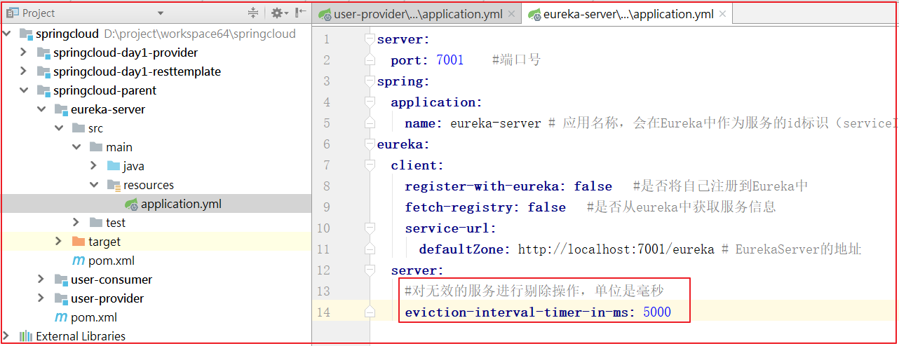
上图代码如下：
1 eviction-interval-timer-in-ms : 5000
自我保护：
Eureka会统计服务实例最近15分钟心跳续约的比例是否低于85%，如果低于则会触发自我保护机制。
服务中心页面会显示如下提示信息
含义：紧急情况！Eureka可能错误地声称实例已经启动，而事实并非如此。续约低于阈值，因此实例不会为了安全而过期。
1 2 3 1.自我保护模式下，不会剔除任何服务实例 2.自我保护模式保证了大多数服务依然可用 3.通过enable-self-preservation配置可用关停自我保护，默认值是打开
关闭自我保护
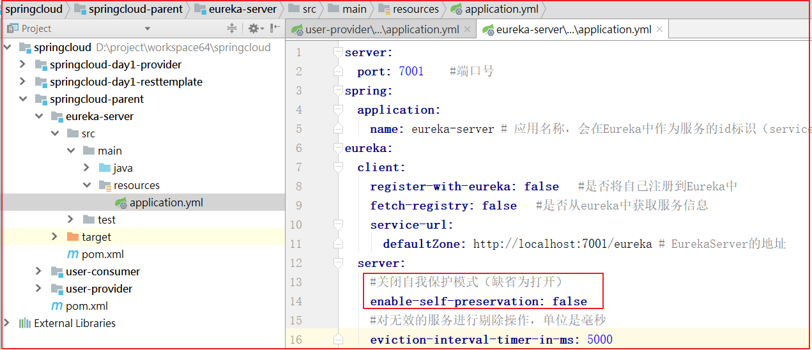
上图配置如下：
1 enable-self-preservation : false
4.3 小结
4.Spring Cloud Ribbon 负载均衡 Ribbon主要 解决集群服务中，多个服务高效率访问的问题。
4.1Ribbon 简介 什么是Ribbon？
Ribbon是Netflix发布的负载均衡器，有助于控制HTTP客户端行为。为Ribbon配置服务提供者地址列表后，Ribbon就可基于负载均衡算法，自动帮助服务消费者请求。
Ribbon默认提供的负载均衡算法：轮询，随机,重试法,加权。当然，我们可用自己定义负载均衡算法
4.2入门案例 复制一个user-provider
============================user-provider2===========================
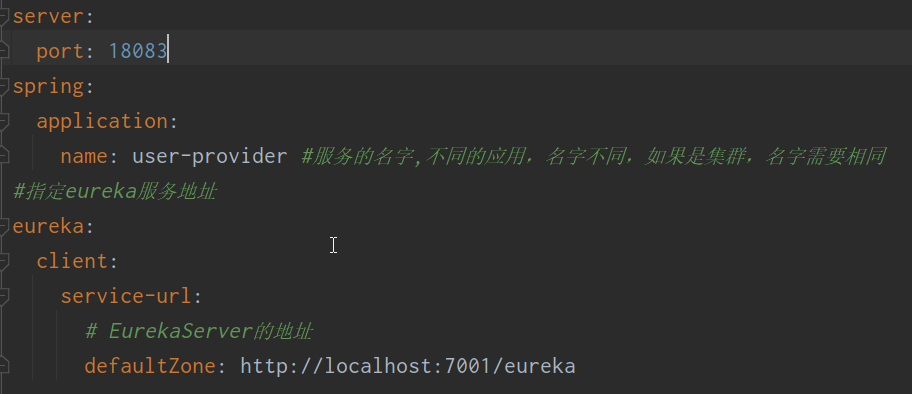
修改启动类名称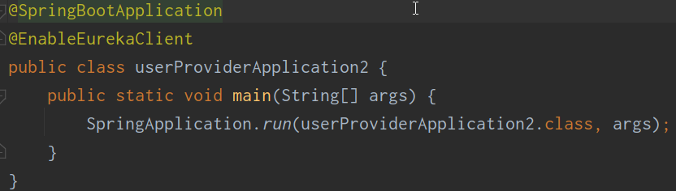
1 2 3 4 5 @Bean @LoadBalanced public RestTemplate restTemplate () return new RestTemplate(); }
1 2 3 4 5 6 7 8 9 10 11 12 @GetMapping("/look") public User look () User user = restTemplate.getForObject("http://user-provider/user/2" , User.class); return user; }
4.3其他负载均衡策略配置 配置修改轮询策略：Ribbon默认的负载均衡策略是轮询，通过如下
1 2 3 4 5 6 7 8 9 10 11 user-provider: ribbon: NFLoadBalancerRuleClassName: com.netflix.loadbalancer.ZoneAvoidanceRule
SpringBoot可以修改负载均衡规则，配置为ribbon.NFLoadBalancerRuleClassName
格式{服务名称}.ribbon.NFLoadBalancerRuleClassName
4.4小结
Ribbon的负载均衡算法应用在客户端，只需要提供服务列表，就能帮助消费端自动访问服务端，并通过不同算法实现负载均衡。
Ribbon的轮询、随机算法配置：在application.yml中配置 {服务名称}.ribbon.NFLoadBalancerRuleClassName
负载均衡的切换:在LoadBalancerInterceptor中获取服务的名字，通过调用RibbonLoadBalancerClient的execute方法，并获取ILoadBalancer负载均衡器，然后根据ILoadBalancer负载均衡器查询出要使用的节点，再获取节点的信息，并实现调用。
5.Spring Cloud Hystrix 5.1Hystrix 简介
Hystrix，英文意思是豪猪，全身是刺，刺是一种保护机制。Hystrix也是Netflix公司的一款组件。
Hystrix的作用是什么？
Hystrix是Netflix开源的一个延迟和容错库，用于隔离访问远程服务、第三方库、防止出现级联失败也就是雪崩效应。
熔断器状态机有3个状态：
Closed：关闭状态，所有请求正常访问
Open：打开状态，所有请求都会被降级。Hystrix会对请求情况计数，当一定时间失败请求百分比达到阈值(极限值)，则触发熔断，断路器完全关闭默认失败比例的阈值是50%，请求次数最低不少于20次
Half Open：半开状态
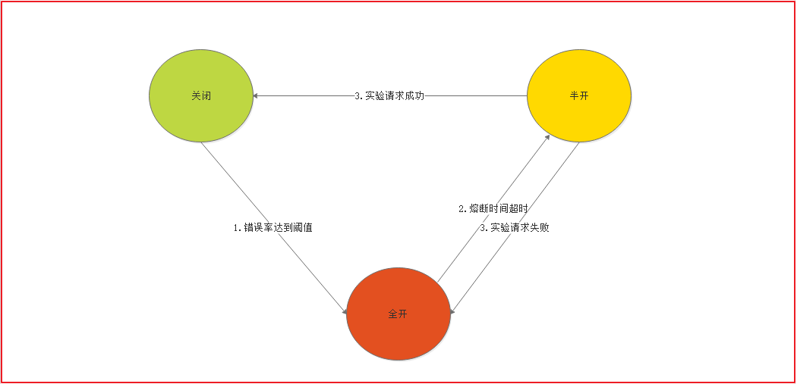
熔断器的核心：线程隔离和服务降级。
线程隔离：是指Hystrix为每个依赖服务调用一个小的线程池，如果线程池用尽，调用立即被拒绝，默认不采用排队。
服务降级(兜底方法)：优先保证核心服务，而非核心服务不可用或弱可用。触发Hystrix服务降级的情况：线程池已满、请求超时。
线程隔离和服务降级之后，用户请求故障时，线程不会被阻塞，更不会无休止等待或者看到系统奔溃，至少可以看到执行结果(熔断机制)。
5.2局部熔断案例 1)引入熔断的依赖坐标：
在user-consumer中加入依赖
1 2 3 4 5 <dependency > <groupId > org.springframework.cloud</groupId > <artifactId > spring-cloud-starter-netflix-hystrix</artifactId > </dependency >
(2)开启熔断的注解
修改user-consumer的com.yuefeng.UserConsumerApplication,在该类上添加@EnableCircuitBreaker,代码如下：
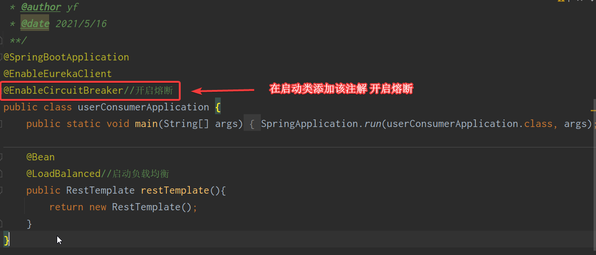
(3)服务降级处理
添加降级处理方法，方法如下：
1 2 3 4 5 6 7 8 9 public User defaultMethod () User user = new User(); user.setUsername("默认的服务降级" ); return user; }
在需要熔断处理的方法上添加@HystrixCommand(fallbackMethod = "defaultMethod")
5.3其他熔断策略配置 1 2 3 4 1. 熔断后休眠时间：sleepWindowInMilliseconds 2. 熔断触发最小请求次数：requestVolumeThreshold 3. 熔断触发错误比例阈值：errorThresholdPercentage 4. 熔断超时时间：timeoutInMilliseconds
配置如下：
1 2 3 4 5 6 7 8 9 10 11 12 13 14 15 16 17 18 hystrix: command: default: circuitBreaker: forceOpen: false errorThresholdPercentage: 50 sleepWindowInMilliseconds: 10000 requestVolumeThreshold: 10 execution: isolation: thread: timeoutInMilliseconds: 2000
5.4全局服务降级的fallback方法 两种编写方式：编写在类上，编写在方法上。在类的上边对类的所有方法都生效。在方法上，仅对当前方法有效。
添加一个全局服务降级的方法
1 2 3 4 5 6 7 8 9 public User defaultFailBack () User user = new User(); user.setUsername("Default-服务降级,默认处理！" ); return user; }
2. 原来的`@HystrixCommand`相关去掉，并添加`@HystrixCommand`注解：
3. 类上添加`@DefaultProperties(defaultFallback = "defaultFailBack")`